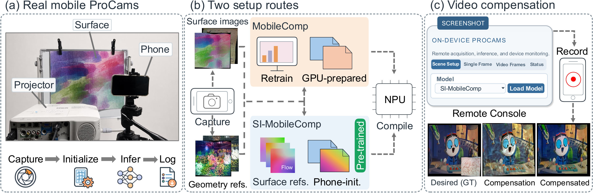
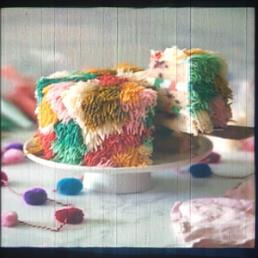
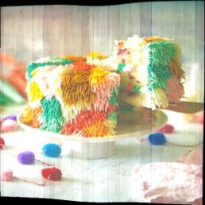

MobileComp: Real-Time Full Projector Compensation on Mobile Devices

Abstract
Full projector compensation aims to modify projector input image to compensate for geometric and photometric distortions introduced by a nonplanar, textured projection surface. Mobile deployment of this capability is highly desirable, as it provides user convenience and preserves data privacy by keeping projector inputs on-device, without uploading to external servers. Existing learning-based methods, however, typically require setup-specific training on a desktop-class GPU and computationally expensive inference, limiting self-contained mobile deployment. To solve this problem, we propose MobileComp, which, to the best of our knowledge, is the first framework to enable real-time full projector compensation on a smartphone. MobileComp performs real-time geometric correction and photometric compensation on the smartphone after preparing a compact compensation model on a desktop-class GPU. We further present Setup-Independent MobileComp (SI-MobileComp) to eliminate per-setup training using shared pre-trained weights. We design a compact student network, deployment-aligned quantization, and an asynchronous Android pipeline that overlaps frame preparation with inference on the smartphone-integrated neural processing unit (NPU). This pipeline integrates smartphone-based reference acquisition, setup initialization, video decoding, geometric correction, and NPU-based photometric compensation to form a complete mobile compensation system. Evaluations across diverse setups show that MobileComp achieves real-time video compensation on a smartphone, outperforming desktop-oriented baselines that run at less than 1 FPS on the same device with a speedup of over 60x.
Video Presentation
Camera-Captured Results
Select a scene and drag the divider to compare the uncompensated and compensated projections. The reference images show the desired frame and the bare surface.
Choose a scene

